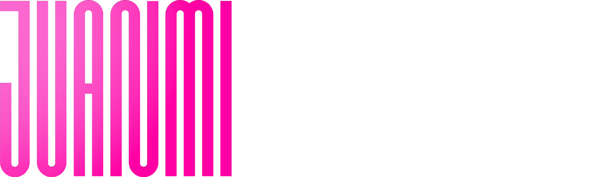

GRID GENERATOR
Diseña grids para pantallas LED, configura módulos, añade guías, textos y cableado y exporta tus diseños.
ABRIR GRID GENERATOR →
Una colección de herramientas para preparar pantallas LED y gestionar tiempos de ponentes. Selecciona la herramienta con la que quieres trabajar.
Diseña grids para pantallas LED, configura módulos, añade guías, textos y cableado y exporta tus diseños.
ABRIR GRID GENERATOR →Controla los tiempos de intervención, muestra mensajes al ponente y utiliza una pantalla de visualización independiente.
ABRIR TIME GENERATOR →